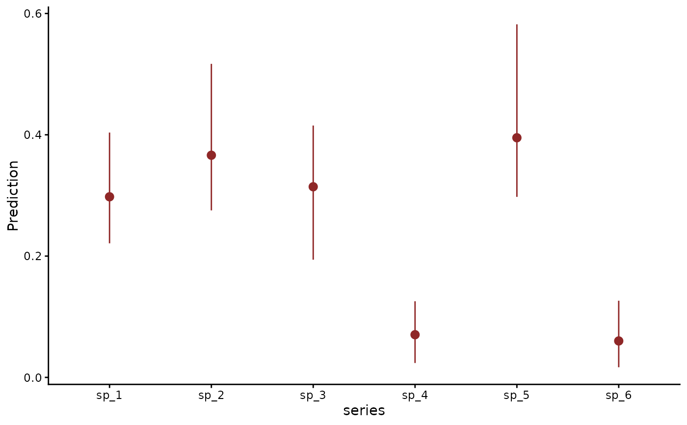
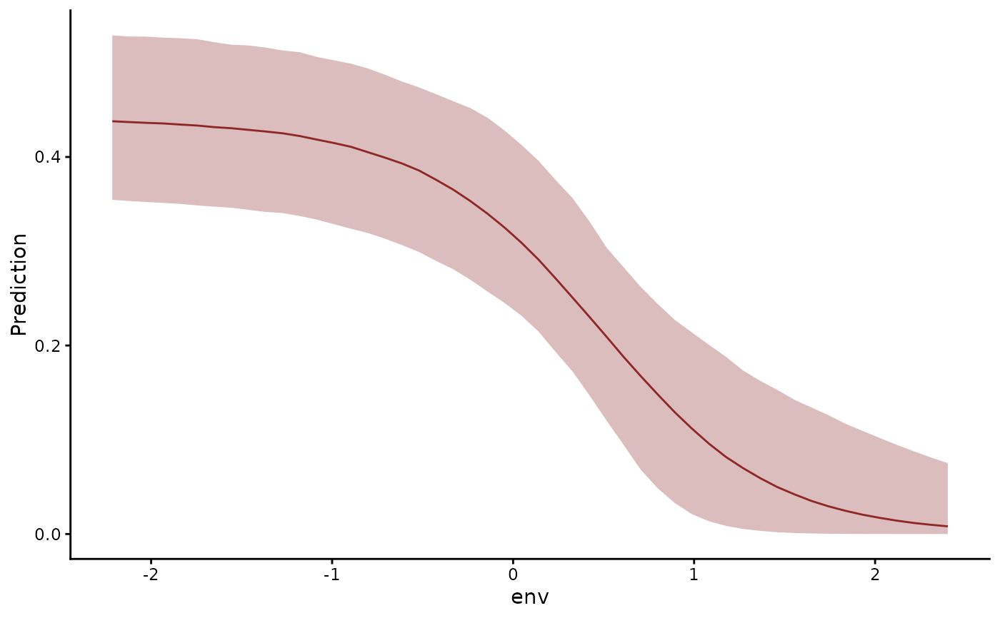
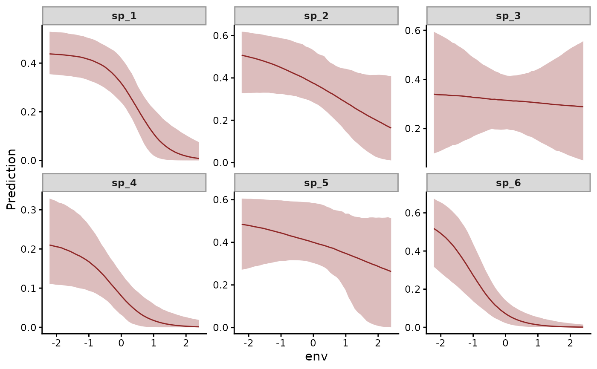
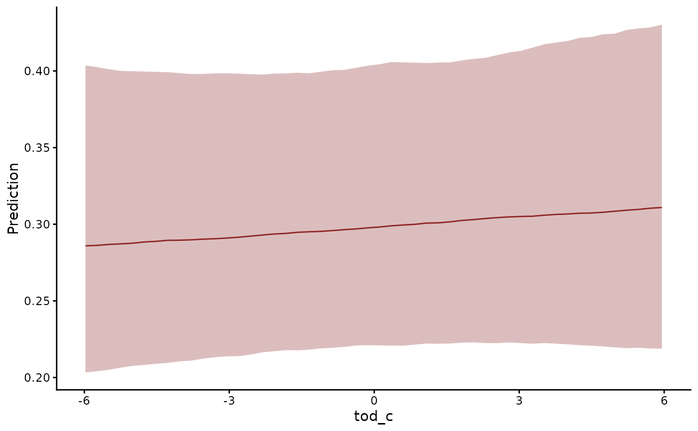
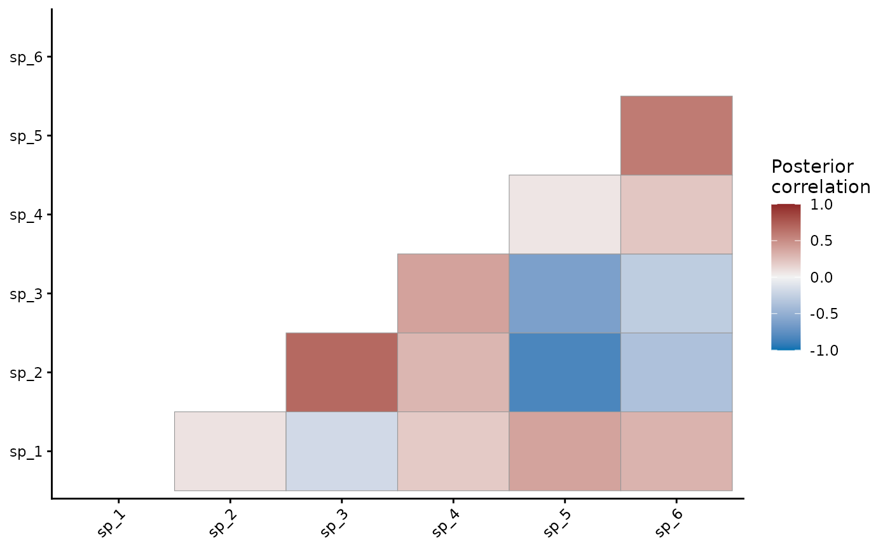
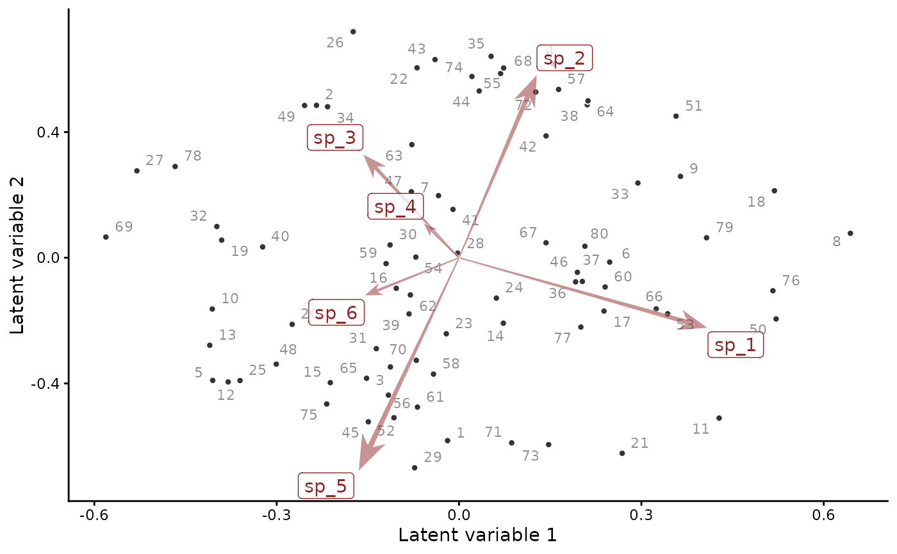

Fits a joint species distribution model (JSDM) to the presences,
detections or counts of many species across many sampling units.
Species often co-occur more or less often than their responses to
the measured covariates predict. A few latent factors capture that
residual association. They need far fewer parameters than a full
correlation matrix among species. The observation model takes the
smooths, Gaussian processes and random effects of any mvgam model.
The factors take their own predictors through factor_formula.
Write lv_axis() in one of its terms to give each factor its own
effect of a covariate, a constrained ordination.
Arguments
- formula
Main observation model formula (supports brms syntax). Smooth specials
s(),t2(),gp(), varying intercepts and slopes, monotonicmo(), measurement-errorme(), distributionaldparsub-formulas andoffset()are all available.gp()accepts both the approximate Hilbert-space form (gp(x, k = 20)) and the exact full-covariance form (gp(x), nok). Prediction atnewdatarequires the approximate form. An exactgp()term fits and scores in-sample.mvgam()says so once per session.- factor_formula
A one-sided formula for the latent factors' linear predictor. Write
lv_axis()in a term to give each factor its own effect, as in~ s(elev, by = lv_axis())or~ elev:lv_axis(). Each covariate must take one value per sampling unit. The deprecatedby = trendacts asby = lv_axis(). Defaults to~ -1, factors without predictors.- knots
Optional named list of knot positions for smooth terms, by covariate, as
knotsofmvgam().- data
A
data.frameorlistholding the response, the covariates of both formulas, theunitcolumn and thespeciesfactor.Data held as arrays, as unmarked, ubms, flocker, Hmsc and spOccupancy take them, convert to this long format.
pivot_detection_array()converts detection histories of occupancy and N-mixture data:[J, K],[N, J, K], multi-season[N, J, T, K]or a list of[J, K]matrices per species.pivot_species_matrix()converts a wide[J, N]species composition matrix.- newdata
Optional held-out
data.frame, stored on the fit asobject$test_data. Fitting draws no forecasts.forecast()called withoutnewdataforecasts these times, carrying the fitted latent state forward.plot(fit, type = "series")overlays them.posterior_predict()on these data uses the covariate part alone. The section 'Which prediction function?' ofpredict.mvgam()compares the two.- family
The observation family every species shares, as a family object. mvgam_families lists them. Defaults to
binomial()for presence-absence data. Counts take a count family such aspoisson()ornegbinomial().For one family per species, write
formulawith onebrms::bf()per species, each naming its family, as inbf(count ~ env, family = poisson()) + bf(seen ~ env, family = bernoulli()). The responses then form the species axis, in place of aspeciescolumn.familyapplies to any response that names none.The simplex families
diri(),multi()andcateg()need a per-species term, as iny ~ env * speciesory ~ 0 + species + env:species. A coefficient shared by every species cancels from their likelihood. Iny ~ env,b_Interceptandb_envtake their priors alone. mvgam warns of this once per session.diri()sets out the identification.- unit
The unquoted name of the numeric column indexing the sampling units, often
timeorsite. Defaults totime.- species
The unquoted name of the factor column indexing the species. Defaults to
series, as in other mvgam models.- priors
Optional
brmspriorof priors to set, frombrms::prior().prior, the brms spelling, is accepted in....get_prior.mvgam_formula()lists the classes a model takes.- n_lv
Integer number of latent factors, from 1 to the number of species. Defaults to 2. The residual covariance
Z Z' + diag(Psi^2)has rank at most the number of species. Further columns ofZadd nothing.Under the default Student-t prior on
Z, or a structured prior built fromtraits,phyloorloadings_prior$distances,n_lvis the number of factors in the likelihood. Under the multiplicative gamma process prior (loadings_prior = "mgp"orlist(column_shrinkage = "mgp", ...)) it is a ceiling. The prior shrinks later columns towards zero. A largerloadings_prior$mgp_a2shrinks them harder.active_factors()counts the factors the data support.- traits
Optional species traits for a structured loadings prior: a
data.frameor matrix with one row per species, or the name of an element ofdata2. Rows are matched tolevels(data[[species]])by aseriescolumn, by row name or by order. Factor columns are one-hot encoded and numeric columns are standardised. They becomeloadings_prior$features. Supplying an explicitloadings_prioras well is refused.- trait_slopes
Optional one-sided formula of traits, such as
~ trait1 + trait2, for trait-mediated responses to the environment (the fourth-corner model of Hmsc). Each population-level term offormulabecomes a non-linear parameter regressed on the traits, plus a species-level deviation. The deviations of intercept and slope correlate under an LKJ prior ((1 | sp | species)). The traits must be columns ofdata, constant within species. A smooth of a trait goes intrait_slopes, as~ s(trait1). A smooth informulais refused, because brms's top-level non-linear formula takes none. The defaults arestd_normal()on each trait coefficient andstudent_t(3, 0, 2.5)on the species SD.priorsoverrides them.- phylo
Optional phylogeny: an
ape::phylotree, whose cophenetic distances are taken, or a numeric distance matrix with row and column names matchinglevels(data[[species]]). The distances are rescaled to a maximum of 1 and becomeloadings_prior$distances$phylo. A tree that is not ultrametric draws a warning once. A tree requires the ape package. Supplying an explicitloadings_prioras well is refused.- loadings_prior
Optional structured prior on the loadings, as
loadings_priorofmvgam()takes it. Supplyingtraitsorphyloas well is refused.- backend
"cmdstanr"or"rstan". Defaults togetOption("brms.backend", "cmdstanr").- threads
Positive integer number of threads per chain, or
NULL(the default) for none. The model is compiled withcpp_options$stan_threads = TRUE. cmdstanr then samples withthreads_per_chain = threads. The closure-unit families (nmix(),occ()) and the multi-response families (diri(),mvn(),mvt(),multi(),categ()) split their likelihood over units withreduce_sum, in about eight chunks. With 50 or more closure units,threads = 4samples about a third faster. Fewer units can sample slower, the threading overhead outweighing the gain. A brms family without atrend_formulauses the threading brms writes.A brms family with a
trend_formulasamples each chain on one thread whateverthreadssays. The threaded likelihood brms writes leaves no place to add the trend. Each such fit warns.- run_model
Logical.
FALSEbuilds the model without parsing, compiling or sampling it. The result holds$stancode,$standataand the prior table, with$fitset toNULL.stancode.mvgam_formula(),standata.mvgam_formula()andget_prior.mvgam_formula()return them. Methods that need draws, such assummary()andforecast(), refuse it. Ajsdgam()model has nomvgam_formula(), which makesrun_model = FALSEthe way to inspect one before fitting. Defaults toTRUE.- ...
Further arguments of
mvgam(), such asdata2(wheretraitsandphylofind a named element),algorithm,chainsandsilent.
Value
A fitted model of class c("mvgam", "jsdgam", "brmsfit").
Every mvgam method applies, such as summary(), predict(),
forecast() and loo(). ordinate() and residual_cor()
describe the factors. update(fit, n_lv = 3) refits it through
jsdgam() with the arguments given changed.
References
Warton, D. I., Blanchet, F. G., O'Hara, R. B., Ovaskainen, O., Taskinen, S., Walker, S. C. and Hui, F. K. C. (2015). So many variables: joint modeling in community ecology. Trends in Ecology and Evolution, 30(12):766-779. doi:10.1016/j.tree.2015.09.007
Ovaskainen, O., Tikhonov, G., Norberg, A., Blanchet, F. G., Duan, L., Dunson, D., Roslin, T. and Abrego, N. (2017). How to make more out of community data? Ecology Letters, 20(5):561-576. doi:10.1111/ele.12757
Tikhonov, G., Opedal, O. H., Abrego, N., Lehikoinen, A., de Jonge, M. M. J., Oksanen, J. and Ovaskainen, O. (2020). Joint species distribution modelling with the R-package Hmsc. Methods in Ecology and Evolution, 11(3):442-447. doi:10.1111/2041-210X.13345
Hui, F. K. C. (2016). boral - Bayesian Ordination and Regression Analysis of Multivariate Abundance Data in R. Methods in Ecology and Evolution, 7(6):744-750. doi:10.1111/2041-210X.12514
Heaps, S. E. and Jermyn, I. H. (2024). Structured prior distributions for the covariance matrix in latent factor models. Statistics and Computing, 34:143. doi:10.1007/s11222-024-10454-0
See also
sim_jsdgam() simulates data this function fits.
sim_closure_unit_data() simulates the occ() and nmix()
case. residual_cor(), ordinate(), shared_variation(),
active_factors() and compare_loadings() interpret the fitted
factors. lv_axis() gives each factor its own covariate effect.
how_to_cite() drafts a methods paragraph for the fit and
methods_md() writes its equations.
The JSDM article fits a negative
binomial model with a trait-informed loadings prior, ordination
biplots and multiplicative gamma process shrinkage.
Other model fitting:
check_newdata(),
mvgam(),
mvgam_data(),
mvgam_formula(),
mvgam_multiple(),
pivot_detection_array(),
pivot_species_matrix(),
series_to_mvgam(),
stancode.mvgam_formula(),
update.mvgam()
Examples
# \dontrun{
# Detections of 6 species at 80 sites, 4 visits each. Occupancy
# responds to the site covariate `env` and detection to the time of
# day `tod_c`. Two latent factors drive the species associations.
simdat <- sim_closure_unit_data(
family = occ(),
n_species = 6L,
n_sites = 80L,
n_visits = 4L,
n_lv = 2L,
seed = 1L
)
# A joint occupancy model. Each species has its own occupancy
# intercept and `env` slope, plus its own detection intercept. Two
# latent factors take up the residual association.
mod <- jsdgam(
formula = bf(y ~ series * env, p ~ series + tod_c),
factor_formula = ~ -1,
data = simdat$data_train,
family = occ(),
n_lv = 2L,
chains = 2,
silent = 2
)
#> Warning: 210 of 2000 (10.0%) transitions ended with a divergence.
#> See https://mc-stan.org/misc/warnings for details.
summary(mod)
#> Family: occ
#> Links: mu = logit; p = logit
#> Formula: y ~ series * env
#> p ~ series + tod_c
#> Data: simdat$data_train (Number of observations: 1920)
#> Series: 6
#> Trends: ZMVN; formula: ~-1
#> Draws: 2 chains, each with iter = 2000; warmup = 1000; thin = 1;
#> total post-warmup draws = 2000
#>
#> == Observation Model ==
#> Regression Coefficients:
#> Estimate Est.Error l-95% CI u-95% CI Rhat Bulk_ESS Tail_ESS
#> Intercept 1.08 0.81 0.17 3.20 1.00 131 60
#> p_Intercept -0.22 0.18 -0.58 0.15 1.00 518 689
#> seriessp_2 -0.39 0.99 -2.70 1.34 1.01 91 77
#> seriessp_3 -1.32 0.88 -3.65 -0.18 1.01 119 46
#> seriessp_4 -1.49 1.70 -4.73 1.74 1.02 194 80
#> seriessp_5 0.16 1.63 -2.46 4.47 1.04 28 28
#> seriessp_6 -3.13 0.97 -5.69 -1.76 1.01 146 105
#> env -2.30 1.22 -6.14 -0.92 1.01 91 39
#> seriessp_2:env 1.57 1.39 -0.47 5.54 1.01 76 45
#> seriessp_3:env 2.23 1.28 0.62 6.07 1.01 105 36
#> seriessp_4:env -0.03 2.16 -5.33 4.44 1.03 97 44
#> seriessp_5:env 1.58 1.76 -3.02 5.69 1.04 29 23
#> seriessp_6:env 0.40 1.36 -1.65 4.15 1.01 107 46
#> p_seriessp_2 0.57 0.25 0.10 1.06 1.00 720 1016
#> p_seriessp_3 1.12 0.26 0.61 1.63 1.00 690 1003
#> p_seriessp_4 -1.03 0.41 -1.92 -0.30 1.00 558 576
#> p_seriessp_5 0.52 0.24 0.05 1.00 1.00 648 948
#> p_seriessp_6 0.63 0.34 -0.05 1.28 1.00 1077 1228
#> p_tod_c 0.01 0.02 -0.03 0.05 1.00 1508 1386
#>
#> == Trend Model ==
#> Factor Loadings:
#> Estimate Est.Error l-95% CI u-95% CI Rhat Bulk_ESS Tail_ESS
#> Z_tilde[sp_1,1] 1.08 1.28 0.12 5.42 1.00 108 42
#> Z_tilde[sp_2,1] 0.19 1.15 -1.52 2.73 1.00 575 379
#> Z_tilde[sp_3,1] -0.09 1.00 -1.67 1.42 1.01 1633 254
#> Z_tilde[sp_4,1] 0.13 1.19 -1.82 2.03 1.01 1312 585
#> Z_tilde[sp_5,1] 0.85 2.82 -2.86 9.45 1.04 123 16
#> Z_tilde[sp_6,1] 0.16 0.67 -1.02 1.66 1.00 1022 885
#> Z_tilde[sp_2,2] 1.03 1.49 0.03 4.95 1.00 210 87
#> Z_tilde[sp_3,2] 0.34 1.22 -1.22 2.92 1.01 786 121
#> Z_tilde[sp_4,2] 0.20 1.41 -1.76 3.00 1.00 1111 278
#> Z_tilde[sp_5,2] -1.21 2.82 -10.16 2.27 1.04 176 35
#> Z_tilde[sp_6,2] -0.16 0.66 -1.52 1.01 1.00 1005 647
#>
#> Draws were sampled using sampling(NUTS). For each parameter, Bulk_ESS
#> and Tail_ESS are effective sample size measures, and Rhat is the potential
#> scale reduction factor on split chains (at convergence, Rhat = 1).
#>
#> Next steps:
#> - `pp_check(fit, type = "fit_stat")`: goodness of fit of unit totals
#> - `plot(hindcast(fit, type = "latent_state"))`: posterior occupancy of each unit
#> - `shared_variation(fit)`: factor-implied Delta = Z Sigma Z' (rotation-invariant)
#> - `residual_cor(fit)`: implied cross-series correlations
#> - `loo(fit)` / `loo_compare(...)`: model fit + comparison
#> - `conditional_effects(fit)`: covariate effects
#> Use `how_to_cite(fit)` for a methods paragraph and `methods_md(fit)` for its equations.
# The effect of `env` on the chance of a detection, occupancy times
# detection
conditional_effects(mod)




# The residual correlations among species the factors imply
plot(residual_cor(mod))

# Site scores and species loadings on the two factors
ordinate(mod, rotation = "varimax")
#> Registered S3 methods overwritten by 'ggpp':
#> method from
#> heightDetails.titleGrob ggplot2
#> widthDetails.titleGrob ggplot2

# Next, compare n_lv = 1 with update(mod, n_lv = 1L) and loo()
# }